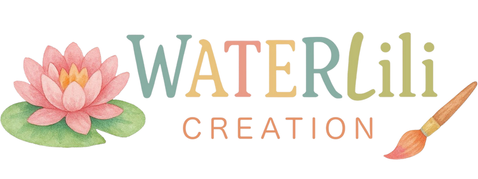

Challonges, France
Réservations au 06 01 90 52 43
27€/personne
Matériel inclus
Samedi 28 mars 2026
9h00-12h00
Salle des fêtes - 74910 Challonges
France
Seyssel, France
Une invitation pour les enfants à partir de 6 ans à se détendre, bouger, respirer et créer dans un lieu magique — une belle maison en pierre au cœur de la nature.
Chaque moment est pensé pour nourrir la confiance, la curiosité et la joie d’exprimer sa créativité. Une parenthèse bienveillante, où imagination et sérénité se rencontrent.
C’est avec joie que j’animerai cet atelier aux côtés de mon amie Ilenia Morano, professeure de yoga.
30€/enfant
Matériel inclus
Samedi 28 Mars 2026
15h00-17h00
Terrakasha | 737 Rte de Pologny - 74910 Seyssel
France
Ericeira, Portugal
25€/personne (100€ pour 5 séances)
Matériel inclus
Tous les Dimanches
10h00-12h00
JBay Collective | R. Dr. Eduardo Burnay 32 A
Ericeira, Portugal